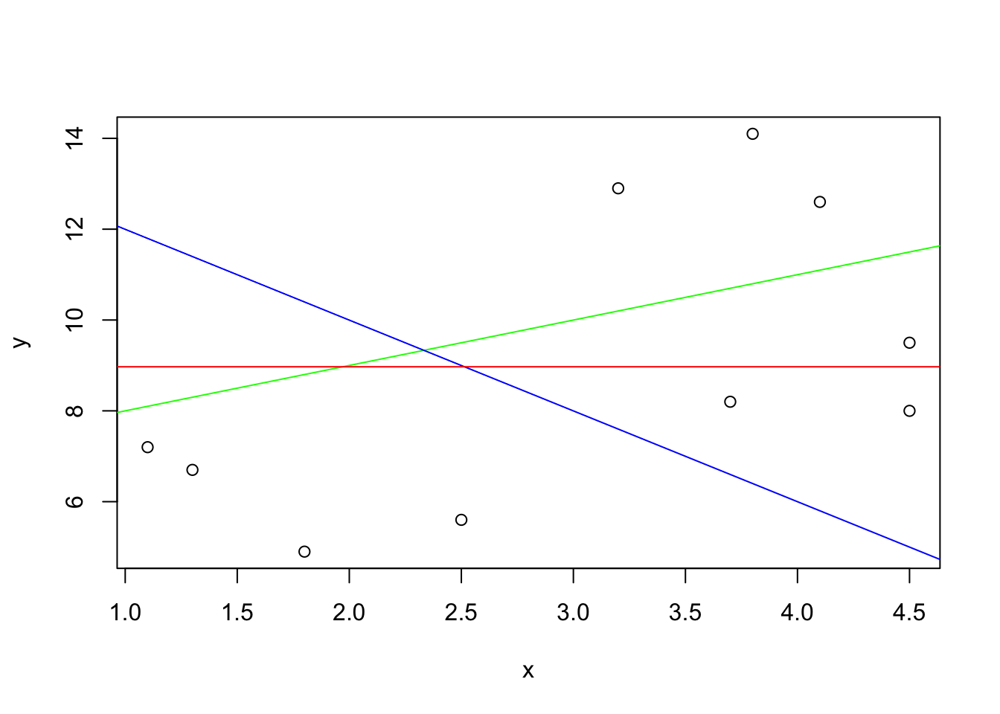
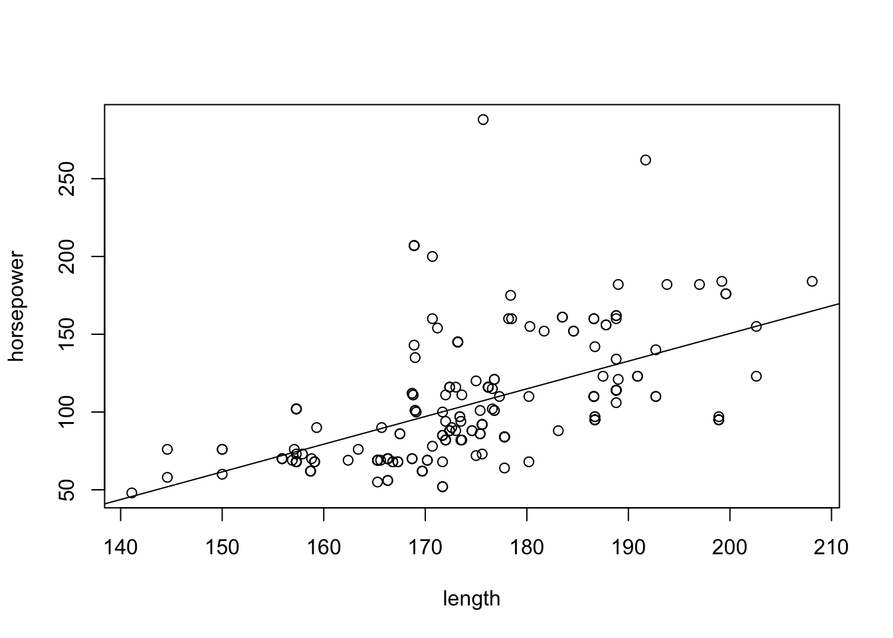

Chapter 14 Linear Regression
14.1 Student Learning Objectives
In the previous chapter we examined the situation where the response is numeric and the explanatory variable is a factor with two levels. This chapter deals with the case where both the response and the explanatory variables are numeric. The method that is used in order to describe the relations between the two variables is regression. Here we apply linear regression to deal with a linear relation between two numeric variables. This type of regression fits a line to the data. The line summarizes the effect of the explanatory variable on the distribution of the response.
Statistical inference can be conducted in the context of regression. Specifically, one may fit the regression model to the data. This corresponds to the point estimation of the parameters of the model. Also, one may produce confidence intervals for the parameters and carry out hypotheses testing. Another issue that is considered is the assessment of the percentage of variability of the response that is explained by the regression model.
By the end of this chapter, the student should be able to:
Produce scatter plots of the response and the explanatory variable.
Explain the relation between a line and the parameters of a linear equation. Add lines to a scatter plot.
Fit the linear regression to data using the function “
lm” and conduct statistical inference on the fitted model.Explain the relations among \(R^2\), the percentage of response variability explained by the regression model, the variability of the regression residuals, and the variance of the response.
14.2 Points and Lines
In this section we consider the graphical representation of the response and the explanatory variables on the same plot. The data associated with both variables is plotted as points in a two-dimensional plane. Linear equations can be represented as lines on the same two-dimensional plane. This section prepares the background for the discussion of the linear regression model. The actual model of linear regression is introduced in the next section.
14.2.1 The Scatter Plot
Consider two numeric variables. A scatter plot can be used in order to display the data in these two variables. The scatter plot is a graph in which each observation is represented as a point. Examination of the scatter plot may revile relations between the two variables.
Consider an example. A marine biologist measured the length (in millimeters) and the weight (in grams) of 10 fish that where collected in one of her expeditions. The results are summarized in a data frame that is presented in Table \[tab:Regression\_1\]. Notice that the data frame contains 10 observations. The variable \(x\) corresponds to the length of the fish and the variable \(y\) corresponds to the weight.
\[tab:Regression\_1\]
| Observation | \(x\) | \(y\) |
|---|---|---|
| 1 | 4.5 | 9.5 |
| 2 | 3.7 | 8.2 |
| 3 | 1.8 | 4.9 |
| 4 | 1.3 | 6.7 |
| 5 | 3.2 | 12.9 |
| 6 | 3.8 | 14.1 |
| 7 | 2.5 | 5.6 |
| 8 | 4.5 | 8.0 |
| 9 | 4.1 | 12.6 |
| 10 | 1.1 | 7.2 |
Let us display this data in a scatter plot. Towards that end, let us read the length data into an object by the name “x” and the weight data into an object by the name “y”. Finally, let us apply the function “plot” to the formula that relates the response “y” to the explanatory variable “x”:
x <- c(4.5,3.7,1.8,1.3,3.2,3.8,2.5,4.5,4.1,1.1)
y <- c(9.5,8.2,4.9,6.7,12.9,14.1,5.6,8.0,12.6,7.2)
plot(y~x)FIGURE 14.1: A Scatter Plot
The scatter plot that is produced by the last expression is presented in Figure 14.1.
A scatter plot is a graph that displays jointly the data of two numerical variables. The variables (“x” and “y” in this case) are represented by the \(x\)-axis and the \(y\)-axis, respectively. The \(x\)-axis is associated with the explanatory variable and the \(y\)-axis is associated with the response.
Each observation is represented by a point. The \(x\)-value of the point corresponds to the value of the explanatory variable for the observation and the \(y\)-value corresponds to the value of the response. For example, the first observation is represented by the point \((x=4.5,y=9.5)\). The two rightmost points have an \(x\) value of 4.5. The higher of the two has a \(y\) value of 9.5 and is therefore point associated with the first observation. The lower of the two has a \(y\) value of 8.0, and is thus associated with the 8th observation. Altogether there are 10 points in the plot, corresponding to the 10 observations in the data frame.
Let us consider another example of a scatter plot. The file “cars.csv” contains data regarding characteristics of cars. Among the variables in this data frame are the variables “horsepower” and the variable “engine.size”. Both variables are numeric.
The variable “engine.size” describes the volume, in cubic inches, that is swept by all the pistons inside the cylinders. The variable “horsepower” measures the power of the engine in units of horsepower. Let us examine the relation between these two variables with a scatter plot:
cars <- read.csv("_data/cars.csv")
plot(horsepower ~ engine.size, data=cars)FIGURE 14.2: The Scatter Plot of Power versus Engine Size
In the first line of code we read the data from the file into an R data frame that is given the name “cars”. In the second line we produce the scatter plot with “horsepower” as the response and “engine.size” as the explanatory variable. Both variables are taken from the data frame “cars”. The plot that is produced by the last expression is presented in Figure \[fig:Regression\_2\].
Consider the expression “plot(horsepower~engine.size, data=cars)”. Both the response variable and the explanatory variables that are given in this expression do not exist in the computer’s memory as independent objects, but only as variables within the object “cars”. In some cases, however, one may refer to these variables directly within the function, provided that the argument “data=data.frame.name” is added to the function. This argument informs the function in which data frame the variables can be found, where data.frame.name is the name of the data frame. In the current example, the variables are located in the data frame “cars”.
Examine the scatter plot in Figure 14.2. One may see that the values of the response (horsepower) tend to increase with the increase in the values of the explanatory variable (engine.size). Overall, the increase tends to follow a linear trend, a straight line, although the data points are not located exactly on a single line. The role of linear regression, which will be discussed in the subsequent sections, is to describe and assess this linear trend.
14.2.2 Linear Equation
Linear regression describes linear trends in the relation between a response and an explanatory variable. Linear trends may be specified with the aid of linear equations. In this subsection we discuss the relation between a linear equation and a linear trend (a straight line).
A linear equation is an equation of the form:
\[y = a + b \cdot x\;,\] where \(y\) and \(x\) are variables and \(a\) and \(b\) are the coefficients of the equation. The coefficient \(a\) is called the intercept and the coefficient \(b\) is called the slope.
A linear equation can be used in order to plot a line on a graph. With each value on the \(x\)-axis one may associate a value on the \(y\)-axis: the value that satisfies the linear equation. The collection of all such pairs of points, all possible \(x\) values and their associated \(y\) values, produces a straight line in the two-dimensional plane.
FIGURE 14.3: Lines
As an illustration consider the three lines in Figure 14.3. The green line is produced via the equation \(y = 7 + x\), the intercept of the line is 7 and the slope is 1. The blue is a result of the equation \(y = 14 - 2 x\). For this line the intercept is 14 and the slope is -2. Finally, the red line is produced by the equation \(y = 8.97\). The intercept of the line is 8.97 and the slope is equal to 0.
The intercept describes the value of \(y\) when the line crosses the \(y\)-axis. Equivalently, it is the result of the application of the linear equation for the value \(x=0\). Observe in Figure 14.3 that the green line crosses the \(y\)-axis at the level \(y=7\). Likewise, the blue line crosses the \(y\)-axis at the level \(y=14\). The red line stays constantly at the level \(y=8.97\), and this is also the level at which it crosses the \(y\)-axis.
The slope is the change in the value of \(y\) for each unit change in the value of \(x\). Consider the green line. When \(x=0\) the value of \(y\) is \(y=7\). When \(x\) changes to \(x=1\) then the value of \(y\) changes to \(y=8\). A change of one unit in \(x\) corresponds to an increase in one unit in \(y\). Indeed, the slope for this line is \(b=1\). As for the blue line, when \(x\) changes from 0 to 1 the value of \(y\) changes from \(y=14\) to \(y=12\); a decrease of two units. This decrease is associated with the slope \(b=-2\). Lastly, for the constant red line there is no change in the value of \(y\) when \(x\) changes its value from \(x=0\) to \(x=1\). Therefore, the slope is \(b=0\). A positive slope is associated with an increasing line, a negative slope is associated with a decreasing line and a zero slope is associated with a constant line.
Lines can be considered in the context of scatter plots. Figure 14.3 contains the scatter plot of the data on the relation between the length of fish and their weight. A regression line is the line that best describes the linear trend of the relation between the explanatory variable and the response. Neither of the lines in the figure is the regression line, although the green line is a better description of the trend than the blue line. The regression line is the best description of the linear trend.
The red line is a fixed line that is constructed at a level equal to the average value70 of the variable \(y\). This line partly reflects the information in the data. The regression line, which we fit in the next section, reflects more of the information by including a description of the trend in the data.
Lastly, let us see how one can add lines to a plot in R. Functions to produce plots in R can be divided into two categories: high level and low level plotting functions. High level functions produce an entire plot, including the axes and the labels of the plot. The plotting functions that we encountered in the past such as “plot”, “hist”, “boxplot” and the like are all high level plotting functions. Low level functions, on the other hand, add features to an existing plot.
An example of a low level plotting function is the function “abline”. This function adds a straight line to an existing plot. The first argument to the function is the intercept of the line and the second argument is the slope of the line. Other arguments may be used in order to specify the characteristics of the line. For example, the argument “col=color.name” may be used in order to change the color of the line from its default black color. A plot that is very similar to plot in Figure 14.3 may be produced with the following code71:
plot(y~x)
abline(7,1,col="green")
abline(14,-2,col="blue")
abline(mean(y),0,col="red")
Initially, the scatter plot is created and the lines are added to the plot one after the other. Observe that color of the first line that is added is green, it has an intercept of 7 and a slope of 1. The second line is blue, with a intercept of 14 and a negative slope of -2. The last line is red, and its constant value is the average of the variable \(y\).
In the next section we discuss the computation of the regression line, the line that describes the linear trend in the data. This line will be added to scatter plots with the aid of the function “abline”.
14.3 Linear Regression
Data that describes the joint distribution of two numeric variables can be represented with a scatter plot. The \(y\)-axis in this plot corresponds to the response and the \(x\)-axis corresponds to the explanatory variable. The regression line describes the linear trend of the response as a function of the explanatory variable. This line is characterized by a linear equation with an intercept and a slope that are computed from the data.
In the first subsection we present the computation of the regression linear equation from the data. The second subsection discusses regression as a statistical model. Statistical inference can be carried out on the basis of this model. In the context of the statistical model, one may consider the intercept and the slope of the regression model that is fitted to the data as point estimates of the model’s parameter. Based on these estimates, one may test hypotheses regarding the regression model and construct confidence intervals for parameters.
14.3.1 Fitting the Regression Line
The R function that fits the regression line to data is called “lm”, an acronym for Linear Model. The input to the function is a formula, with the response variable to the left of the tilde character and the explanatory variable to the right of it. The output of the function is the fitted linear regression model.
Let us apply the linear regression function to the data on the weight and the length of fish. The output of the function is saved by us in a object called “fit”. Subsequently, the content of the object “fit” is displayed:
fit <- lm(y~x)
fit##
## Call:
## lm(formula = y ~ x)
##
## Coefficients:
## (Intercept) x
## 4.6165 1.4274When displayed, the output of the function “lm” shows the formula that was used by the function and provides the coefficients of the regression linear equation. Observe that the intercept of the line is equal to 4.616. The slope of the line, the coefficient that multiplies “x” in linear equation, is equal to 1.427.
One may add the regression line to the scatter plot with the aid of the function “abline”:
plot(y~x)
abline(fit)FIGURE 14.4: A Fitted Regression Line
The first expression produces the scatter plot of the data on fish. The second expression adds the regression line to the scatter plot. When the input to the graphical function “abline” is the output of the function “lm” that fits the regression line, then the result is the addition of the regression line to the existing plot. The line that is added is the line characterized by the coefficients that are computed by the function “lm”. The coefficients in the current setting are 4.616 for the intercept and 1.427 for the slope.
The scatter plot and the added regression line are displayed in Figure 14.4. Observe that line passes through the points, balancing between the points that are above the line and the points that are below. The line captures the linear trend in the data.
Examine the line in Figure 14.4. When \(x=1\) then the \(y\) value of the line is slightly above 6. When the value of \(x\) is equal to 2, a change of one unit, then value of \(y\) is below 8, and is approximately equal to 7.5. This observation is consistent with the fact that the slop of the line is 1.427. The value of \(x\) is decreased by 1 when changing from \(x=1\) to \(x=0\). Consequently, the value of \(y\) when \(x=0\) should decrease by 1.427 in comparison to its value when \(x=1\). The value at \(x=1\) is approximately 6. Therefore, the value at \(x=0\) should be approximately 4.6. Indeed, we do get that the intercept is equal to 4.616.
The coefficients of the regression line are computed from the data and are hence statistics. Specifically, the slope of the regression line is computed as the ratio between the covariance of the response and the explanatory variable, divided by the variance of the explanatory variable. The intercept of the regression line is computed using the sample averages of both variables and the computed slope.
Start with the slope. The main ingredient in the formula for the slope, the numerator in the ratio, is the covariance between the two variables. The covariance measures the joint variability of two variables. Recall that the formula for the sample variance of the variable \(x\) is equal to::
\[s^2 = \frac{\mbox{Sum of the squares of the deviations}}{\mbox{Number of values in the sample}-1} = \frac{\sum_{i=1}^n (x_i - \bar x)^2}{n-1}\;.\] The formula of the sample covariance between \(x\) and \(y\) replaces the square of the deviations by the product of deviations. The product is between an \(y\) deviation and the parallel \(x\) deviation:
\[\mbox{covariance} = \frac{\mbox{Sum of products of the deviations}}{\mbox{Number of values in the sample}-1} = \frac{\sum_{i=1}^n (y_i-\bar y)(x_i - \bar x)}{n-1}\;.\]
The function “cov” computes the sample covariance between two numeric variables. The two variables enter as arguments to the function and the sample covariance is the output. Let us demonstrate the computation by first applying the given function to the data on fish and then repeating the computations without the aid of the function:
cov(y,x)## [1] 2.3861111sum((y-mean(y))*(x-mean(x)))/9## [1] 2.3861111In both cases we obtained the same result. Notice that the sum of products of deviations in the second expression was divided by 9, which is the number of observations, minus 1.
The slope of the regression line is the ratio between the covariance and the variance of the explanatory variable.
The regression line passes through the point \((\bar x, \bar y)\), a point that is determined by the means of the both the explanatory variable and the response. It follows that the intercept should obey the equation:
\[\bar y = a + b\cdot \bar x \quad\Longrightarrow\quad a = \bar y - b\cdot \bar x\;,\] The left-hand-side equation corresponds to the statement that the value of the regression line at the average \(\bar x\) is equal to the average of the response \(\bar y\). The right-hand-side equation is the solution to the left-hand-side equation.
One may compute the coefficients of the regression model manually by computing first the slope as a ratio between the covariance and the variance of explanatory variable. The intercept can then be obtained by the equation that uses the computed slope and the averages of both variables:
b <- cov(x,y)/var(x)
a <- mean(y) - b*mean(x)
a## [1] 4.6164772b## [1] 1.4273845Applying the manual method we obtain, after rounding up, the same coefficients that were produced by the application of the function “lm” to the data.
As an exercise, let us fit the regression model to the data on the relation between the response “horsepower” and the explanatory variable “engine.size”. Apply the function “lm” to the data and present the results:
fit.power <- lm(horsepower ~ engine.size, data=cars)
fit.power##
## Call:
## lm(formula = horsepower ~ engine.size, data = cars)
##
## Coefficients:
## (Intercept) engine.size
## 6.64138 0.76949The fitted regression model is stored in an object called “fit.power”. The intercept in the current setting is equal to 6.6414 and the slope is equal to 0.7695.
Observe that one may refer to variables that belong to a data frame, provided that the name of the data frame is entered as the value of the argument “data” in the function “lm”. Here we refer to variables that belong to the data frame “cars”.
Next we plot the scatter plot of the data and add the regression line:
plot(horsepower ~ engine.size, data=cars)
abline(fit.power)FIGURE 14.5: A Regression Model of Power versus Engine Size
The output of the plotting functions is presented in Figure 14.5. Again, the regression line describes the general linear trend in the data. Overall, with the increase in engine size one observes increase in the power of the engine.
14.3.2 Inference
Up to this point we have been considering the regression model in the context of descriptive statistics. The aim in fitting the regression line to the data was to characterize the linear trend observed in the data. Our next goal is to deal with regression in the context of inferential statistics. The goal here is to produce statements on characteristics of an entire population on the basis of the data contained in the sample.
The foundation for statistical inference in a given setting is a statistical model that produces the sampling distribution in that setting. The sampling distribution is the frame of reference for the analysis. In this context, the observed sample is a single realization of the sampling distribution, one realization among infinitely many potential realizations that never take place. The setting of regression involves a response and an explanatory variable. We provide a description of the statistical model for this setting.
The relation between the response and the explanatory variable is such that the value of the later affects the distribution of the former. Still, the value of the response is not uniquely defined by the value of the explanatory variable. This principle also hold for the regression model of the relation between the response \(Y\) and the explanatory variable \(X\). According to the model of linear regression the value of the expectation of the response for observation \(i\), \(\Expec(Y_i)\), is a linear function of the value of the explanatory variable for the same observation. Hence, there exist and intercept \(a\) and a slope \(b\), common for all observations, such that if \(X_i = x_i\) then
\[\Expec(Y_i) = a + b \cdot x_i\;.\] The regression line can thus be interpreted as the average trend of the response in the population. This average trend is a linear function of the explanatory variable.
The intercept \(a\) and the slope \(b\) of the statistical model are parameters of the sampling distribution. One may test hypotheses and construct confidence intervals for these parameters based on the observed data and in relation to the sampling distribution.
Consider testing hypothesis. A natural null hypothesis to consider is the hypothesis that the slope is equal to zero. This hypothesis corresponds to statement that the expected value of the response is constant for all values of the explanatory variable. In other words, the hypothesis is that the explanatory variable does not affect the distribution of the response72. One may formulate this null hypothesis as \(H_0:b = 0\) and test it against the alternative \(H_1: b \not= 0\) that states that the explanatory variable does affect the distribution of the response.
A test of the given hypotheses can be carried out by the application of the function “summary” to the output of the function “lm”. Recall that the function “lm” was used in order to fit the linear regression to the data. In particular, this function was applied to the data on the relation between the size of the engine and the power that the engine produces. The function fitted a regression line that describes the linear trend of the data. The output of the function was saved in an object by the name “fit.power”. We apply the function “summary” to this object:
summary(fit.power)##
## Call:
## lm(formula = horsepower ~ engine.size, data = cars)
##
## Residuals:
## Min 1Q Median 3Q Max
## -59.6430 -12.2815 -5.5153 10.2508 125.1530
##
## Coefficients:
## Estimate Std. Error t value Pr(>|t|)
## (Intercept) 6.641379 5.233181 1.2691 0.2059
## engine.size 0.769486 0.039186 19.6369 <2e-16 ***
## ---
## Signif. codes: 0 '***' 0.001 '**' 0.01 '*' 0.05 '.' 0.1 ' ' 1
##
## Residual standard error: 23.305 on 201 degrees of freedom
## (2 observations deleted due to missingness)
## Multiple R-squared: 0.65735, Adjusted R-squared: 0.65565
## F-statistic: 385.61 on 1 and 201 DF, p-value: < 2.22e-16The output produced by the application of the function “summary” is long and detailed. We will discuss this output in the next section. Here we concentrate on the table that goes under the title “Coefficients:”. The said table is made of 2 rows and 4 columns. It contains information for testing, for each of the coefficients, the null hypothesis that the value of the given coefficient is equal to zero. In particular, the second row may be used is order to test this hypothesis for the slope of the regression line, the coefficient that multiplies the explanatory variable.
Consider the second row. The first value on this row is 0.76949, which is equal (after rounding up) to the slope of the line that was fitted to the data in the previous subsection. However, in the context of statistical inference this value is the estimate of the slope of the population regression coefficient, the realization of the estimator of the slope73.
The second value is 0.03919. This is an estimate of the standard deviation of the estimator of the slope. The third value is the test statistic. This statistic is the ratio between the deviation of the sample estimate of the parameter (0.76949) from the value of the parameter under the null hypothesis (0), divided by the estimated standard deviation (0.03919): \((0.76949 - 0)/0.03919 = 0.76949/0.03919 = 19.63486\), which is essentially the value given in the report74.
The last value is the computed \(p\)-value for the test. It can be shown that the sampling distribution of the given test statistic, under the null distribution which assumes no slope, is asymptotically the standard Normal distribution. If the distribution of the response itself is Normal then the distribution of the statistic is the \(t\)-distribution on \(n-2\) degrees of freedom. In the current situation this corresponds to 201 degrees of freedom75. The computed \(p\)-value is extremely small, practically eliminating the possibility that the slope is equal to zero.
The first row presents information regarding the intercept. The estimated intercept is 6.64138 with an estimated standard deviation of 5.23318. The value of the test statistic is 1.269 and the \(p\)-value for testing the null hypothesis that the intercept is equal to zero against the two sided alternative is 0.206. In this case the null hypothesis is not rejected since the \(p\)-value is larger than 0.05.
The report contains an inference for the intercept. However, one is advised to take this inference in the current case with a grain of salt. Indeed, the intercept is the expected value of the response when the explanatory variable is equal to zero. Here the explanatory variable is the size of the engine and the response is the power of that engine. The power of an engine of size zero is a quantity that has no physical meaning! In general, unless the intercept is in the range of observations (i.e. the value 0 is in the range of the observed explanatory variable) one should treat the inference on the intercept cautiously. Such inference requires extrapolation and is sensitive to the miss-specification of the regression model.
Apart from testing hypotheses one may also construct confidence intervals for the parameters. A crude confidence interval may be obtained by taking 1.96 standard deviations on each side of the estimate of the parameter. Hence, a confidence interval for the slope is approximately equal to \(0.76949 \pm 1.96\times 0.03919 = [0.6926776, 0.8463024]\). In a similar way one may obtain a confidence interval for the slope76: \(6.64138 \pm 1.96\times 5.23318 = [-3.615653, 16.89841]\).
Alternatively, one may compute confidence intervals for the parameters of the linear regression model using the function “confint”. The input to this function is the fitted model and the output is a confidence interval for each of the parameters:
confint(fit.power)## 2.5 % 97.5 %
## (Intercept) -3.67759894 16.96035643
## engine.size 0.69221808 0.84675366Observe the similarity between the confidence intervals that are computed by the function and the crude confidence intervals that were produced by us. The small discrepancies that do exist between the intervals result from the fact that the function “confint” uses the \(t\)-distribution whereas we used the Normal approximation.
14.4 R-squared and the Variance of Residuals
In this section we discuss the residuals between the values of the response and their estimated expected value according to the regression model. These residuals are the regression model equivalence of the deviations between the observations and the sample average. We use these residuals in order compute the variability that is not accounted for by the regression model. Indeed, the ratio between the total variability of the residuals and the total variability of the deviations from the average serves as a measure of the variability that is not explained by the explanatory variable. R-squared, which is equal to 1 minus this ratio, is interpreted as the fraction of the variability of the response that is explained by the regression model.
We start with the definition of residuals. Let us return to the artificial example that compared length of fish to their weight. The data for this example was given in Table \[tab:Regression\_1\] and was saved in the objects “x” and “y”. The regression model was fitted to this data by the application of the function “lm” to the formula “y~x” and the fitted model was saved in an object called “fit”. Let us apply the function “summary” to the fitted model:
summary(fit)##
## Call:
## lm(formula = y ~ x)
##
## Residuals:
## Min 1Q Median 3Q Max
## -3.03971 -2.13878 -0.65589 1.85178 4.05946
##
## Coefficients:
## Estimate Std. Error t value Pr(>|t|)
## (Intercept) 4.6165 2.3653 1.9518 0.08676 .
## x 1.4274 0.7195 1.9839 0.08255 .
## ---
## Signif. codes: 0 '***' 0.001 '**' 0.01 '*' 0.05 '.' 0.1 ' ' 1
##
## Residual standard error: 2.7908 on 8 degrees of freedom
## Multiple R-squared: 0.32974, Adjusted R-squared: 0.24596
## F-statistic: 3.9357 on 1 and 8 DF, p-value: 0.082554The given report contains a table with estimates of the regression coefficients and information for conducting hypothesis testing. The report contains other information that is associated mainly with the notion of the residuals from regression line. Our current goal is to understand what is that other information.
The residual from regression for each observation is the difference between the value of the response for the observation and the estimated expectation of the response under the regression model77. An observation is a pair \((x_i,y_i)\), with \(y_i\) being the value of the response. The expectation of the response according to the regression model is \(a + b \cdot x_i\), where \(a\) and \(b\) are the coefficients of the model. The estimated expectation is obtained by using, in the formula for the expectation, the coefficients that are estimated from the data. The residual is the difference between \(y_i\) and \(a + b \cdot x_i\).
Consider an example. The first observation on the fish is \((4.5, 9.5)\), where \(x_1 = 4.5\) and \(y_1 = 9.5\). The estimated intercept is 4.6165 and the estimated slope is 1.4274. The estimated expectation of the response for the first variable is equal to
\[4.6165 + 1.4274 \cdot x_1 = 4.6165 + 1.4274 \cdot 4.5 = 11.0398\;.\] The residual is the difference between the observes response and this value:
\[y_1 - (4.6165 + 1.4274 \cdot x_1) = 9.5 - 11.0398 = -1.5398\;.\]
The residuals for the other observations are computed in the same manner. The values of the intercept and the slope are kept the same but the values of the explanatory variable and the response are changed.
FIGURE 14.6: Residuals and Deviations from the Mean
Consult the upper plot in Figure 14.6. This is a scatter plot of the data, together with the regression line in black and the line of the average in red. A vertical arrow extends from each data point to the regression line. The point where each arrow hits the regression line is associated with the estimated value of the expectation for that point. The residual is the difference between the value of the response at the origin of the arrow and the value of the response at the tip of its head. Notice that there are as many residuals as there are observations.
The function “residuals” computes the residuals. The input to the function is the fitted regression model and the output is the sequence of residuals. When we apply the function to the object “fit”, which contains the fitted regression model for the fish data, we get the residuals:
residuals(fit)## 1 2 3 4 5 6
## -1.5397075 -1.6977999 -2.2857694 0.2279229 3.7158923 4.0594616
## 7 8 9 10
## -2.5849385 -3.0397075 2.1312463 1.0133998Indeed, 10 residuals are produced, one for each observation. In particular, the residual for the first observation is -1.5397075, which is essentially the value that we obtained78.
Return to the report produced by the application of the function “summary” to the fitted regression model. The first component in the report is the formula that identifies the response and the explanatory variable. The second component, the component that comes under the title “Residuals:”, gives a summary of the distribution of the residuals. This summary includes the smallest and the largest values in the sequence of residuals, as well as the first and third quartiles and the median. The average is not reported since the average of the residuals from the regression line is always equal to 0.
The table that contains information on the coefficients was discussed in the previous section. Let us consider the last 3 lines of the report.
The first of the three lines contains the estimated value of the standard deviation of the response from the regression model. If the expectations of the measurements of the response are located on the regression line then the variability of the response corresponds to the variability about this line. The resulting variance is estimated by the sum of squares of the residuals from the regression line, divided by the number of observations minus 2. A division by the number of observation minus 2 produces an unbiased estimator of the variance of the response about the regression model. Taking the square root of the estimated variance produces an estimate of the standard deviation:
sqrt(sum(residuals(fit)^2)/8)## [1] 2.7907866The last computation is a manual computation of the estimated standard deviation. It involves squaring the residuals and summing the squares. This sum is divided by the number of observations minus 2 (\(10-2=8\)). Taking the square root produces estimate. The value that we get for the estimated standard deviation is 2.790787, which coincides with the value that appears in the first of the last 3 lines of the report.
The second of these lines reports the R-squared of the linear fit. In order to explain the meaning of R-squared let us consider Figure 14.6 once again. The two plots in the figure present the scatter plot of the data together with the regression line and the line of the average. Vertical black arrows that represent the residuals from the regression are added to the upper plot. The lower plot contains vertical red arrows that extend from the data points to the line of the average. These arrows represent the deviations of the response from the average.
Consider two forms of variation. One form is the variation of the response from its average value. This variation is summarized by the sample variance, the sum of the squared lengths of the red arrows divided by the number of observations minus 1. The other form of variation is the variation of the response from the fitted regression line. This variation is summarized by the sample variation of the residuals, the sum of squared lengths of the black arrows divided by the number of observations minus 1. The ratio between these two quantities gives the relative variability of the response that remains after fitting the regression line to the data.
The line of the average is a straight line. The deviations of the observations from this straight line can be thought of as residuals from that line. The variability of these residuals, the sum of squares of the deviations from the average divided by the number of observations minus 1, is equal to the sample variance.
The regression line is the unique straight line that minimizes the variability of its residuals. Consequently, the variability of the residuals from the regression, the sum of squares of the residuals from the regression divided by the number of observations minus 1, is the smallest residual variability produced by any straight line. It follows that the sample variance of the regression residuals is less than the sample variance of the response. Therefore, the ratio between the variance of the residuals and the variance of the response is less than 1.
R-squared is the difference between 1 and the ratio of the variances. Its value is between 0 and 1 and it represents the fraction of the variability of the response that is explained by the regression line. The closer the points are to the regression line the larger the value of R-squared becomes. On the other hand, the less there is a linear trend in the data the closer to 0 is the value of R-squared. In the extreme case of R-squared equal to 1 all the data point are positioned exactly on a single straight line. In the other extreme, a value of 0 for R-squared implies no linear trend in the data.
Let us compte manually the difference between 1 and the ratio between the variance of the residuals and the variance of the response:
1-var(residuals(fit))/var(y)## [1] 0.32974132Observe that the computed value of R-squared is the same as the value “Multiple R-squared: 0.3297” that is given in the report.
The report provides another value of R-squared, titled Adjusted R-squared. The difference between the adjusted and unadjusted quantities is that in the former the sample variance of the residuals from the regression is replaced by an unbiased estimate of the variability of the response about the regression line. The sum of squares in the unbiased estimator is divided by the number of observations minus 2. Indeed, when we re-compute the ratio using the unbiased estimate, the sum of squared residuals divided by \(10 - 2 = 8\), we get:
1-(sum(residuals(fit)^2)/8)/var(y)## [1] 0.24595898The value of this adjusted quantity is equal to the value “Adjusted R-squared: 0.246” in the report.
Which value of R-squared to use is a matter of personal taste. In any case, for a larger number of observations the difference between the two values becomes negligible.
The last line in the report produces an overall goodness of fit test for the regression model. In the current application of linear regression this test reduces to a test of the slope being equal to zero, the same test that is reported in the second row of the table of coefficients79. The \(F\) statistic is simply the square of the \(t\) value that is given in the second row of the table. The sampling distribution of this statistic under the null hypothesis is the \(F\)-distribution on 1 and \(n-2\) degrees of freedom, which is the sampling distribution of the square of the test statistic for the slope. The computed \(p\)-value, “p-value: 0.08255” is the identical (after rounding up) to the \(p\)-value given in the second line of the table.
Return to the R-squared coefficient. This coefficient is a convenient measure of the goodness of fit of the regression model to the data. Let us demonstrate this point with the aid of the “cars” data. In Subsection 14.3.2 we fitted a regression model to the power of the engine as a response and the size of the engine as an explanatory variable. The fitted model was saved in the object called “fit.power”. A report of this fit, the output of the expression “summary(fit.power)” was also presented. The null hypothesis of zero slope was clearly rejected. The value of R-squared for this fit was 0.6574. Consequently, about 2/3 of the variability in the power of the engine is explained by the size of the engine.
Consider trying to fit a different regression model for the power of the engine as a response. The variable “length” describes the length of the car (in inches). How well would the length explain the power of the car? We may examine this question using linear regression:
summary(lm(horsepower ~ length, data=cars))##
## Call:
## lm(formula = horsepower ~ length, data = cars)
##
## Residuals:
## Min 1Q Median 3Q Max
## -53.5706 -20.3471 -6.6903 14.4531 180.7167
##
## Coefficients:
## Estimate Std. Error t value Pr(>|t|)
## (Intercept) -205.39710 32.81851 -6.2586 2.303e-09 ***
## length 1.77963 0.18814 9.4591 < 2.2e-16 ***
## ---
## Signif. codes: 0 '***' 0.001 '**' 0.01 '*' 0.05 '.' 0.1 ' ' 1
##
## Residual standard error: 33.118 on 201 degrees of freedom
## (2 observations deleted due to missingness)
## Multiple R-squared: 0.30803, Adjusted R-squared: 0.30459
## F-statistic: 89.474 on 1 and 201 DF, p-value: < 2.22e-16We used one expression to fit the regression model to the data and to summarize the outcome of the fit.
A scatter plot of the two variables together with the regression line may be produced using the code:
plot(horsepower ~ length, data=cars)
abline(lm(horsepower ~ length, data=cars))
From the examination of the figure we may see that indeed there is a linear trend in the relation between the length and the power of the car. Longer cars tend to have more power. Testing the null hypothesis that the slope is equal to zero produces a very small \(p\)-value and leads to the rejection of the null hypothesis.
The length of the car and the size of the engine are both statistically significant in their relation to the response. However, which of the two explanatory variables produces a better fit?
An answer to this question may be provided by the examination of values of R-squared, the ratio of the variance of the response explained by each of the explanatory variable. The R-squared for the size of the engine as an explanatory variable is 0.6574, which is approximately equal to 2/3. The value of R-squared for the length of the car as an explanatory variable is 0.308, less than 1/3. It follows that the size of the engine explains twice as much of the variability of the power of the engine than the size of car and is a better explanatory variable.
14.5 Exercises
Exercise 14.1 Figure 14.7 presents 10 points and three lines. One of the lines is colored red and one of the points is marked as a red triangle. The points in the plot refer to the data frame in Table \[tab:Regression\_2\] and the three lines refer to the linear equations:
\(y = 4\)
\(y = 5 - 2x\)
\(y = x\)
You are asked to match the marked line to the appropriate linear equation and match the marked point to the appropriate observation:
Which of the three equations, 1, 2 or 3, describes the line marked in red?
The poind marked with a red triangle represents which of the observations. (Identify the observation number.)
\[tab:Regression\_2\]
| Observation | \(x\) | \(y\) |
|---|---|---|
| 1 | 2.3 | -3.0 |
| 2 | -1.9 | 9.8 |
| 3 | 1.6 | 4.3 |
| 4 | -1.6 | 8.2 |
| 5 | 0.8 | 5.9 |
| 6 | -1.0 | 4.3 |
| 7 | -0.2 | 2.0 |
| 8 | 2.4 | -4.7 |
| 9 | 1.8 | 1.8 |
| 10 | 1.4 | -1.1 |
FIGURE 14.7: Lines and Points
Exercise 14.2 Assume a regression model that describes the relation between the expectation of the response and the value of the explanatory variable in the form:
\[\Expec(Y_i) = 2.13 \cdot x_i - 3.60\;.\]
What is the value of the intercept and what is the value of the slope in the linear equation that describes the model?
- Assume the \(x_1 = 5.5\), \(x_2 = 12.13\), \(x_3 = 4.2\), and \(x_4 = 6.7\). What is the expected value of the response of the 3rd observation?
Exercise 14.3 The file “aids.csv” contains data on the number of diagnosed cases of Aids and the number of deaths associated with Aids among adults and adolescents in the United States between 1981 and 200280. The file can be found on the internet at http://pluto.huji.ac.il/~msby/StatThink/Datasets/aids.csv.
The file contains 3 variables: The variable “year” that tells the relevant year, the variable “diagnosed” that reports the number of Aids cases that were diagnosed in each year, and the variable “deaths” that reports the number of Aids related deaths in each year. The following questions refer to the data in the file:
Consider the variable “
deaths” as response and the variable “diagnosed” as an explanatory variable. What is the slope of the regression line? Produce a point estimate and a confidence interval. Is it statistically significant (namely, significantly different than 0)?Plot the scatter plot that is produced by these two variables and add the regression line to the plot. Does the regression line provided a good description of the trend in the data?
Consider the variable “
diagnosed” as the response and the variable “year” as the explanatory variable. What is the slope of the regression line? Produce a point estimate and a confidence interval. Is the slope in this case statistically significant?- Plot the scatter plot that is produced by the later pair of variables and add the regression line to the plot. Does the regression line provided a good description of the trend in the data?
Exercise 14.4 Below are the percents of the U.S. labor force (excluding self-employed and unemployed) that are members of a labor union81. We use this data in order to practice the computation of the regression coefficients.
\[tab:Regression\_4\]
| year | percent |
|---|---|
| 1945 | 35.5 |
| 1950 | 31.5 |
| 1960 | 31.4 |
| 1970 | 27.3 |
| 1980 | 21.9 |
| 1986 | 17.5 |
| 1993 | 15.8 |
Produce the scatter plot of the data and add the regression line. Is the regression model reasonable for this data?
Compute the sample averages and the sample standard deviations of both variables. Compute the covariance between the two variables.
- Using the summaries you have just computed, recompute the coefficients of the regression model.
Exercise 14.5 Assume a regression model was fit to some data that describes the relation between the explanatory variable \(x\) and the response \(y\). Assume that the coefficients of the fitted model are \(a=2.5\) and \(b=-1.13\), for the intercept and the slope, respectively. The first 4 observations in the data are \((x_1,y_1) = (5.5,3.22)\), \((x_2,y_2) = (12.13,-6.02)\), \((x_3,y_3) = (4.2,-8.3)\), and \((x_4,y_4) = (6.7,0.17)\).
What is the estimated expectation of the response for the 4th observation?
- What is the residual from the regression line for the 4th observation?
Exercise 14.6 In Chapter 13 we analyzed an example that involved the difference between fuel consumption in highway and city driving conditions as the response82. The explanatory variable was a factor that was produced by splitting the cars into two weight groups. In this exercise we would like to revisit this example. Here we use the weight of the car directly as an explanatory variable. We also consider the size of the engine as an alternative explanatory variable and compare between the two regression models.
Fit the regression model that uses the variable “
curb.weight” as an explanatory variable. Is the slope significantly different than 0? What fraction of the standard deviation of the response is explained by a regression model involving this variable?Fit the regression model that uses the variable “
engine.size” as an explanatory variable. Is the slope significantly different than 0? What fraction of the standard deviation of the response is explained by a regression model involving this variable?- Which of the two models fits the data better?
14.6 Summary
Glossary
- Regression:
Relates different variables that are measured on the same sample. Regression models are used to describe the effect of one of the variables on the distribution of the other one. The former is called the explanatory variable and the later is called the response.
- Linear Regression:
The effect of a numeric explanatory variable on the distribution of a numeric response is described in terms of a linear trend.
- Scatter Plot:
A plot that presents the data in a pair of numeric variables. The axes represents the variables and each point represents an observation.
- Intercept:
A coefficient of a linear equation. Equals the value of \(y\) when the line crosses the \(y\)-axis.
- Slope:
A coefficient of a linear equation. The change in the value of \(y\) for each unit change in the value of \(x\). A positive slope corresponds to an increasing line and a negative slope corresponds to a decreasing line.
- Covariance:
A measures the joint variability of two numeric variables. It is equal to the sum of the product of the deviations from the mean, divided by the number of observations minus 1.
- Residuals from Regression:
The residual differences between the values of the response for the observation and the estimated expectations of the response under the regression model (the predicted response).
- R-Square:
is the difference between 1 and the ratio between the variance of the residuals from the regression and the variance of the response. Its value is between 0 and 1 and it represents the fraction of the variability of the response that is explained by the regression line.
Discuss in the Forum
The topic for discussion in the Forum of Chapter 6 was mathematical models and how good they should fit reality. In this Forum we would like to return to the same topic subject, but consider it specifically in the context of statistical models.
Some statisticians prefer complex models, models that try to fit the data as closely as one can. Others prefer a simple model. They claim that although simpler models are more remote from the data yet they are easier to interpret and thus provide more insight. What do you think? Which type of model is better to use?
When formulating your answer to this question you may thing of a situation that involves inference based on data conducted by yourself for the sack of others. What would be the best way to report your findings and explain them to the others?
Formulas:
A Linear Equation: \(y = a + b \cdot x\).
Covariance: \(\frac{\mbox{Sum of products of the deviations}}{\mbox{Number of values in the sample}-1} = \frac{\sum_{i=1}^n (y_i-\bar y)(x_i - \bar x)}{n-1}\).
Regression Slope: \(b = \mbox{Covariance}(x,y)/\mbox{Var}(x)\).
Regression Intercept: \(a = \bar y - b\bar x\).
The Regression Model: \(\Expec(Y_i) = a + b \cdot x_i\), \(a\) and \(b\) population parameters.
Residuals: \(y_i - (a + bx_i)\), \(a\) and \(b\) estimated from the data.
Estimate of Residual Variance: \(\sum_{i=1}^n(y_i - (a + bx_i))^2/(n-2)\), \(a\) and \(b\) estimated from the data.
R-Squared: \(1 - \sum_{i=1}^n(y_i - (a + bx_i))^2/\sum_{i=1}^n(y_i - \bar y)^2\), \(a\) and \(b\) estimated from the data.
Run the expression “
mean(y)” to obtain \(\bar y = 8.97\) as the value of the sample average.↩The actual plot in Figure \[fig:Regression\_3\] is produced by a slightly modified code. First an empty plot is produced with the expression “
plot(c(0,5),c(5,15),type=n,xlab=x,ylab=y)” and then the points are added with the expression “points(y~x)”. The lines are added as in the text. Finally, a legend is added with the function “legend”.↩According to the model of linear regression, the only effect of the explanatory variable on the distribution of the response is via the expectation. If such an effect, according to the null hypothesis, is also excluded then the so called explanatory variable is not effecting at all the distribution of the response.↩
The estimator of the slope is obtained via the application of the formula for the computation of the slope to the sample: \(\frac{1}{n-1}\sum_{i=1}^n (Y_i-\bar Y)(X_i - \bar X)/\frac{1}{n-1}\sum_{i=1}^n (X_i - \bar X)^2\).↩
Our computation involves rounding up errors, hence the small discrepancy between the value we computed and the value in the report.↩
Notice that the “
horsepower” measurement is missing for two observation. These observations are deleted for the analysis, leaving a total of \(n=203\) observations. The number of degrees of freedom is \(n-2 = 203-2=201\).↩The warning message that was made in the context of testing hypotheses on the intercept should be applied also to the construction of confidence intervals. If the value 0 is not in the range of the explanatory variable then one should be careful when interpreting a confidence interval for the intercept.↩
The estimated expectation of the response is also called the predicted response.↩
The discrepancy between the value that we computed and the value computed by the function results from rounding up errors. We used the vales of the coefficients that appear in the report. These values are rounded up. The function “
residuals” uses the coefficients without rounding.↩In more complex applications of linear regression, applications that are not considered in this book, the test in the last line of the report and the tests of coefficients do not coincide.↩
The data is taken from Table 1 in section “Practice in Linear Regression” of the online Textbook “Collaborative Statistics” (Connexions. March 22, 2010. http://cnx.org/content/col10522/1.38/) by Barbara Illowsky and Susan Dean.↩
Taken from Homework section in the chapter on linear regression of the online Textbook “Collaborative Statistics” (Connexions. March 22, 2010. http://cnx.org/content/col10522/1.38/) by Barbara Illowsky and Susan Dean.↩
The response was computed using the expression “
cars$highway.mpg - cars$city.mpg”↩